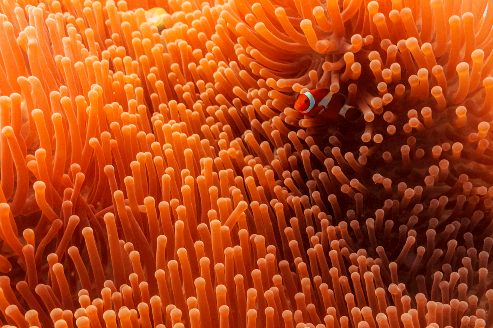
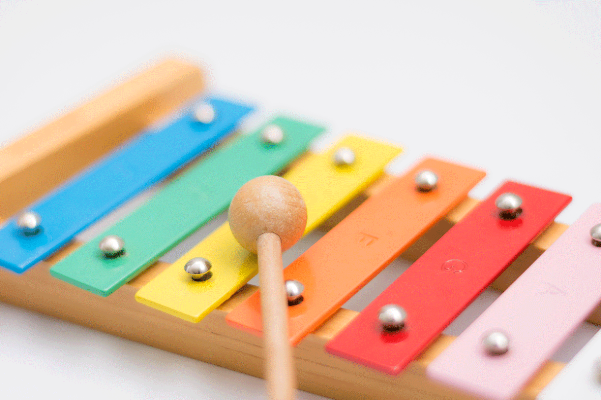

WHAT:
A p5.js sketch that emulates a natural changing process, such as wind motions, falling water, hot lava, macaroni boiling, etc.
WHY:
To explore methods for emulating natural phenomena in code
I was interested in attempting to emulate the gentle motion of a sea anenome under the water. Getting the shape and soft, transparent quality of the tentacles to feel as natural as possible was also a goal.
After finding some very helpful tutorials, I learned how to create a sketch that would result in a design resembling a sea anenome swaying in the sea. The coded anenome is seen from a bird's (or in this case, perhaps a diver's) eye view.
WHAT:
A p5.js sketch that behaves like a musical instrument, incorporating the p5.js audio library extension. The sketch reacts to user input.
WHY:
To explore creative approaches to making digital "music"
I wanted to create an instrument which could be played using a computer keyboard. When considering what types of instruments might lend themselves to this method of playing, my mind was drawn to either a piano or a xylophone. I ended up moving in the direction of a xylophone, because I wanted the simplicity of the instrument to match the simplicity of the way it would be played by the user.
After exploring numerous digital instrument tutorials and resources, I learned how to use envelope and oscillator. This was...instrumental in terms of understanding how to make this digital xylophone work.
Click on the image above to view the xylophone sketch and play it with your computer keyboard!